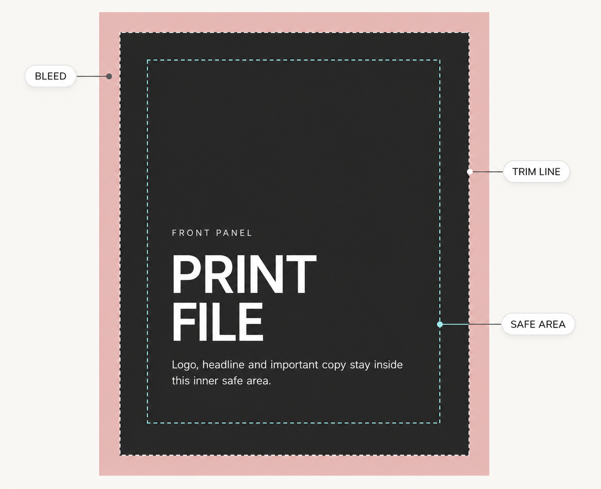
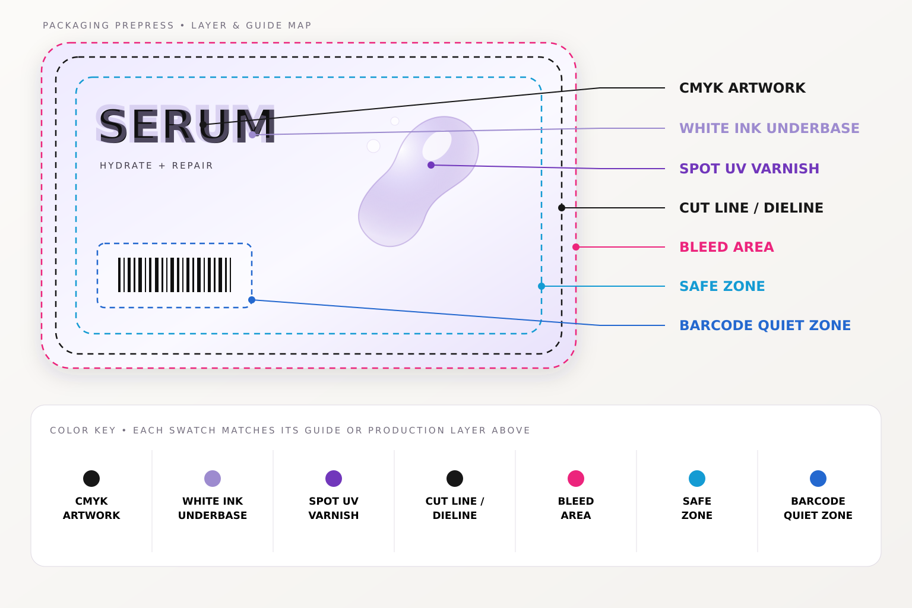
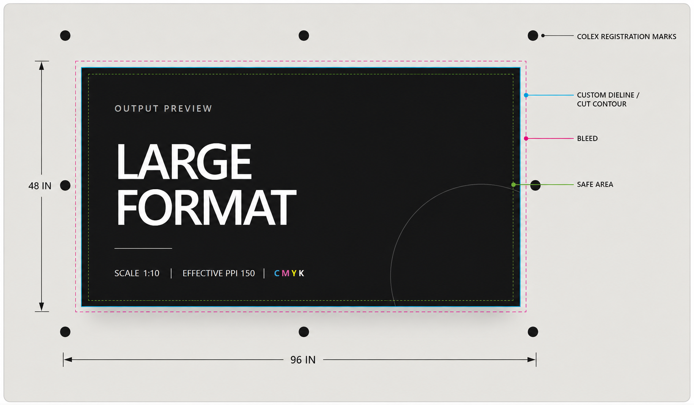

Print & Prepress.
I want this page to show the practical side of my work, not just describe it. These are the kinds of print details I watch for when artwork moves from design to production.
Bleed, trim and safe area at a glance.
This diagram shows the order clearly: bleed extends beyond the finished piece, the trim line marks the final cut, and the safe area sits inside the trim so important text and logos stay protected.

The artwork extends past the trim line so small shifts during cutting do not leave an unwanted white edge.
This is the intended finished edge of the printed piece after it is cut down to size.
Important text, logos and other critical content stay inside this inner boundary, away from the cut.
Brochures and folded pieces need panel logic.
Once a layout folds, the file stops being a simple flat page. Panel order, fold allowance and reading sequence all matter.
Panel sequence, folds and final size
I make sure the brochure still works after trimming and folding, not just as a flat artboard. That includes panel order, fold positions, bleed, safe margins and image quality.
One label can contain several production layers.
This setup shows how the visible CMYK artwork sits alongside technical layers and guides that control how the label is printed, finished and cut.

CMYK carries the visible design, while a separate white-ink underbase can support colour on clear or specialty stock.
A separate varnish layer identifies where a gloss finish should be applied rather than printed as ordinary colour.
The cut line defines the final shape, while the artwork continues into the bleed outside that boundary.
The safe zone protects important content. The barcode quiet zone keeps clear space around the barcode so it can be read reliably.
Large-format files need output-specific setup.
This example brings the production information together in one view: final dimensions, working scale, effective resolution, colour mode, cut contour, bleed, safe area and registration marks.

The file can be prepared at a declared scale as long as the final output dimensions are clear and consistent.
Resolution is checked at the real output size, not only at the size the artwork appears on screen.
The cut path defines the finished shape while bleed extends artwork beyond it to protect against trimming variation.
Registration marks give the finishing equipment reference points for accurate cutting and positioning.
Good prepress is also about releasing the right revision.
Even a technically correct file is still wrong if it is the wrong version. That is why proofing and revision control matter just as much as the setup.
Check the file
Size, bleed, colour, images, fonts and any output-specific notes.
Review the proof
Make sure the corrected artwork still matches the intended layout and content.
Release the right version
Confirm the approved revision is the file that actually goes forward to production.